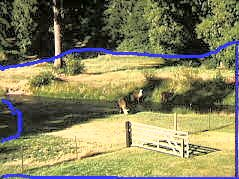
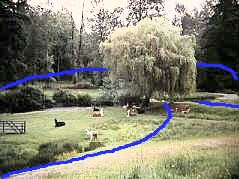
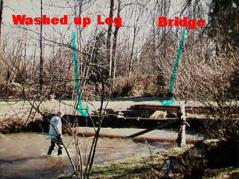
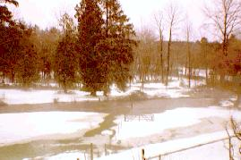

Snow and Flood of Dec. 1996
| Pasture appearance before the flood |
| Large Log and Bridge, photo taken last year |
| Pasture before snow melted, but starting to flood |
 |
 |
In the above updated photo's, the areas outlined in blue are now filled
with water from the creek as of 9 AM this morning, January 1, 1997. The bridge
wash out sometime during the night, there are logs all over in the pasture where
the water is shallow. These pictures aren't the greatest but the only thing I
had handy to try and give you an idea what it looks like here. As you can see
the pictures are not matched by size but the gate in both will show you what it
looks like on both sides. Approximately 90% of the pasture is under water.
Both ends of our street are flooded and closed. Last night we had a record high
temperature of 56 degrees causing the snow to melt faster, then the rain storm.
Today we are supposed to have scattered showers with another storm coming in
tomorrow. We are one of the few areas that still have power.  |
 |
| This picture was taken after a storm last winter, that one was pretty bad
but it didn't wash over the banks into the pasture. The log that I have marked
actually washed up and lodged itself at an angle just before it hit our bridge,
the result was that it deflected the greater force of the water from the bridge
and saved the bridge. The water didn't get high enough to cross over the top of
the bridge. All surrounding areas that you see are now covered with water, a
second log of equal sized has also washed up yesterday. This morning the
bridge and all logs are gone. |
 |
| The creek start to flood into the pasture even before all
the snow had melted. |
|
| |||
|
| |||
|
|
| Last Updated: 12/22/97 |
| Web Pages Created by: PNW Web Design and Internet Consulting, |
| For Web Page Development contact Sandy Stillwell |
| Copyright © 1996-1997, 1998, by Sandy Stillwell. All rights reserved, including the right of reproduction in whole or in part, in any form. This document can not be reproduced without the written consent of the owner. |